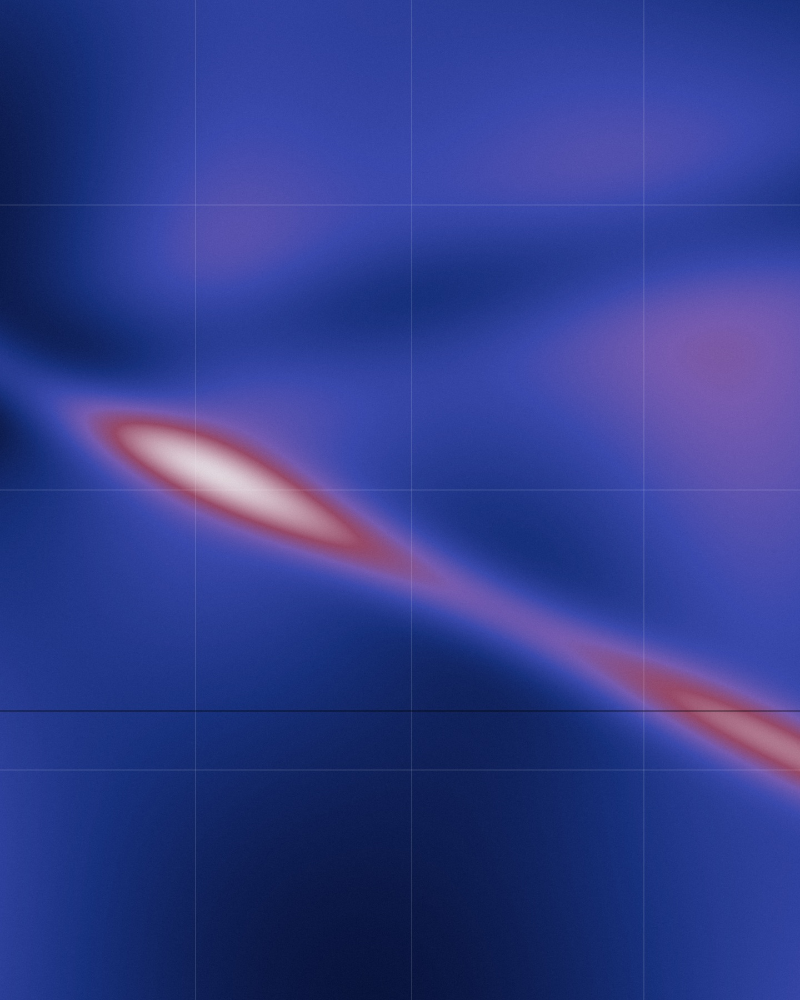

Geonwoo Kim
I am an econometrician interested in how we can learn from data when the variables we care about are noisy, high-dimensional, or constructed by algorithms. I go by Patrick. Currently, I am a Research Professional in Econometric Theory at the University of Chicago.
My work lies at the intersection of measurement error, high-dimensional inference, numerical methods, and economic measurement with AI. I received a B.A. in Mathematics with Honors from Grinnell College.